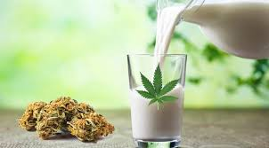

La leche de marihuana es probablemente la receta cannábica más conocida de todas y la más elaborada, junto con la mantequilla cannábica. Normalmente cuando nos disponemos a realizar esta receta, no se suele acertar con la proporción de marihuana y leche, es por ello que la mayoría de veces el efecto suele ser demasiado potente y la experiencia llega a ser un poco desagradable. Para evitar que esto suceda hemos elaborado este conciso artículo, en el que explicamos detalladamente las proporciones ideales de leche y marihuana, la forma de elaborarla, de consumirla y de conservarla.Es muy importante tener en cuenta antes de elaborar esta receta cannábica, que se pueden obtener excelentes beneficios si se utiliza de forma medicinal y un efecto duradero y de gran intensidad si se decide consumir por razones recreativas. Por ello antes de realizar esta receta, es importante tener claro qué tipo de uso se le va a dar. Así que sin más dilación, vamos con esta sencilla y potente receta.
Cómo hacer leche de marihuana | Ingredientes
- 20-30 gr de hojas secas con resina o de 2-5 gramos de marihuana curada por cada litro de leche
- 20-25 gr de marihuana seca y curada
- 1 Litro de agua embotellada
- 1 Litro de leche entera
Cómo preparar la marihuana para hacer leche de marihuana
El primer paso que se debe realizar antes de comenzar con la elaboración de la leche de marihuana, es la limpieza de la materia vegetal para conseguir eliminar el máximo de la clorofila que contiene. Al eliminar la clorofila se consigue que el sabor final sea menos amargo, por lo que es más fácil y agradable consumir la leche de marihuana. Además también eliminamos insectos, huevos de insectos, restos de suciedad como polvo, tierra y restos de productos aplicados de forma foliar.
Leche de marihuana | Extracción de cannabinoides
Hay personas que pueden pensar que al limpiar la marihuana con agua, los Cannabinoides se degradan o se pierden, esto es erróneo. Los Cannabinoides son hidrófugos, por lo que al entrar en contacto con agua no sufren ningún tipo de variación en su estructura y mantienen su forma si mezclarse con este líquido. Sin embargo sí que son liposolubles, lo que quiere decir que si se mezclan con grasas o aceites grasos, la resina y por lo tanto los cannabinoides, van a quedar contenidos en la materia grasa utilizada para ello, la cual en este caso se trata de leche entera.
Una vez tenemos claro lo que sucede con los cannabinoides al entrar en contacto con el agua y con la leche, es el momento de dar comienzo con el primer paso antes de realizar la leche cannábica.
Leche de marihuana | Efectos
A la hora de consumir marihuana de forma ingerida, es importante saber que el efecto va a tardar un poco más en hacerse presente y que además el efecto va a ser más intenso y más duradero. Por este motivo antes de sentarse a disfrutar de esta conocida receta cannábica, te recomendamos que tengas estos factores en cuenta.En la actualidad existe la posibilidad de poder utilizar infinidad de variedades para la elaboración de leche de marihuana. En este sentido se pueden utilizar cepas índicas, sativas e híbridas productoras de THC, aunque gracias a los avances en la elaboración de nuevas cepas de cannabis, también se pueden utilizar variedades ricas en CBD con distintos ratios. Vamos a comentar brevemente los efectos que puede producir la leche cannabica según la marihuana utilizada: